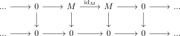

quasi isomorphism in general not an isomorphism
Proposition
Let $\mathcal{A}$ be an abelian category and $\mathrm{Ch_*}(\mathcal{A})$ be the category of chain complexes. Then an quasi-isomorphism is in general not an isomorphism
Proof
Consider

for an object $M \in \mathrm{Ob}(\mathcal{A})$ with $M \not\cong 0$ (see: short exact sequence and isomorphism)
Then we get for the homology functor
\begin{align*}
H_n(-) = 0
\end{align*}
(todo)
but $0: M \rightarrow 0$ is not an isomorphism